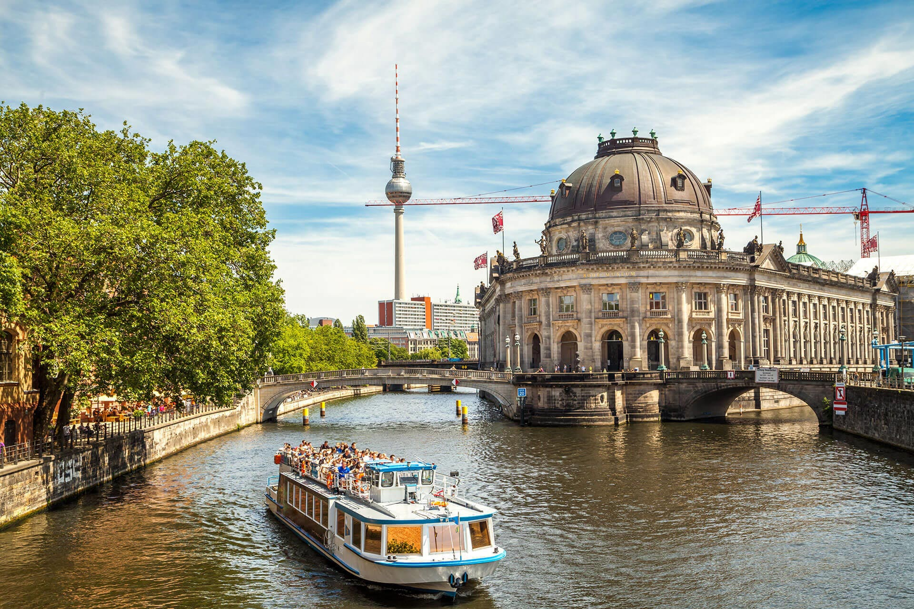
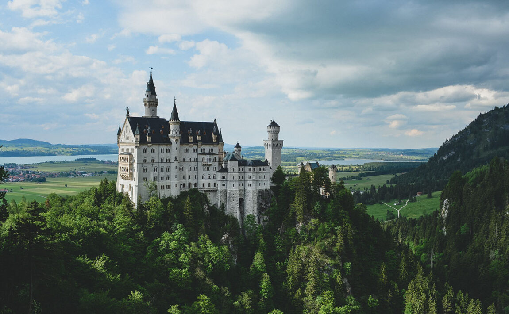
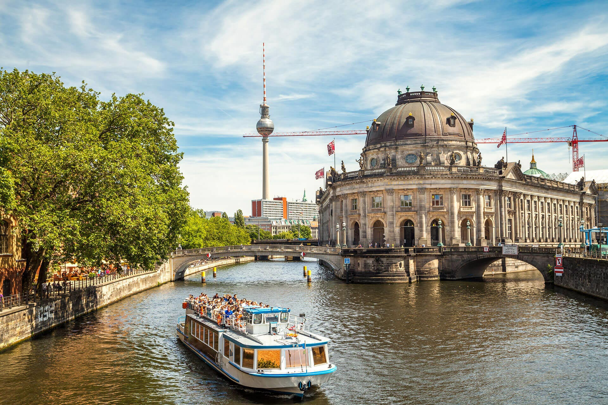
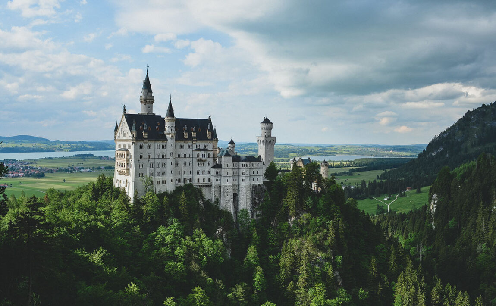

Німеччина
Німеччина є одним з найпопулярніших напрямків для відпочинку та подорожей. Країна надзвичайно різноманітна: від піщаних пляжів Балтійських і Північних морів до гірських ланцюгів Альп на півдні, від похмурих лісів і мальовничої природи Шварцвальда до безкраїх полів сільськогосподарських регіонів, від виноградників долини Рейна до крейдяних скель Рюгена. Тут можна знайти місце по душі для кожного: старовинні міста Баварії — Нюрнберг, Регенсбург, Бамберг або знамениті ганзейські міста — Бремен, Росток, Любек, сучасні мегаполіси — Берлін, Гамбург, Мюнхен і Франкфурт-на-Майні або інші популярні туристичні центри — Дрезден, Ганновер, Кельн.
 


